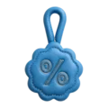
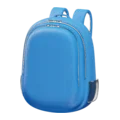

Biblioteca
8 conteúdos
-

Benefícios e parceiros
Descontos e condições dos parceiros.
-
Bonificação
Em revisão
-

Diretório de links
Formulários e sistemas da operação.
-

Em caso de sinistro
Como agir e registrar um acidente.
-

Guia Intelbras
Rotas, embarque e cartão de acesso.
-

Guia para novos motoristas
Cadastro no Telegram e bot de rotas.
-

Nossas regras
Cuidados com o veículo e os passageiros.
-
Wi-Fi dos motoristas
Rede, senha e QR Code da unidade.